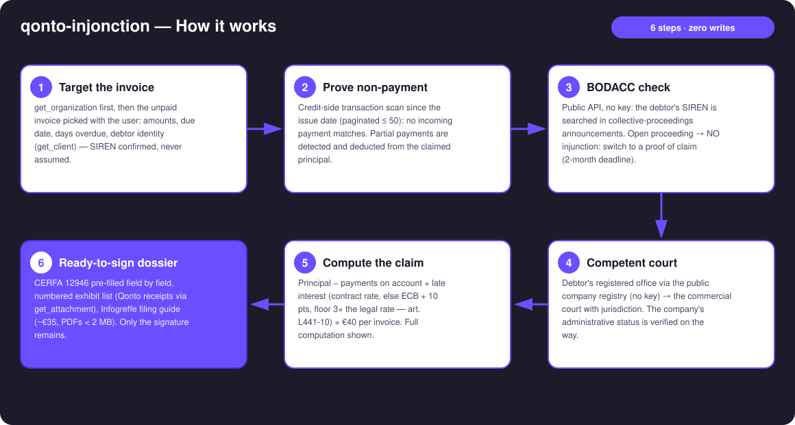
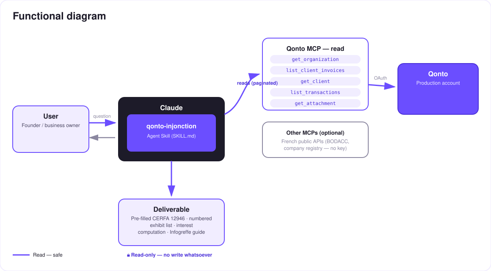

When reminders stop working — a French payment-order court file, ready to sign, built from the Qonto account.
Reminders failed (see qonto-invoice-chaser), the formal notice went unanswered. The French payment-order procedure costs ~€35 and needs no lawyer — yet almost nobody dares: an intimidating form, interest to compute, the right court to find. Most founders just write the invoice off. The skill builds the whole file from the Qonto account:
Public API, no key: debtor in collective proceedings → NO injunction, the skill reorients to a proof of claim (2-month deadline) and drafts it.
Principal (payments on account deducted), interest at ECB + 10 pts (floor 3× the French legal rate — art. L441-10), the €40 indemnity — formula shown.
CERFA 12946 pre-filled field by field, numbered exhibit list (Qonto receipts), competent commercial court identified from the debtor's registered office.
Online filing ~€35, exhibits as PDF < 2 MB, and what happens next: order → service → 1-month opposition. Filing is the user's move.
Would someone use this on a Monday morning? It's the Monday you finally stop waiting for that invoice.
| Prerequisite | Detail | Required |
|---|---|---|
| Qonto production account | Adapts to any organization — get_organization first, nothing hardcoded | ✅ |
| Country | CERFA procedure: France. Other Qonto countries (DE, ES, IT…): full factual dossier but no form — foreign forms or rates are never invented | ℹ️ detected |
| Qonto MCP connected | Official connector (claude.ai / Claude Desktop), OAuth login | ✅ |
| Web access (public APIs) | BODACC + the French company registry — keyless, account-free. Otherwise the skill asks for the two missing facts | ⭕ recommended |
| Amicable stage done | Formal notice already sent (registered mail) — otherwise the skill points to qonto-invoice-chaser first | ⭕ advised |

qonto-prescription-guard
Zero writes, by design: the skill reads Qonto and two keyless public APIs, computes, assembles — and stops at a ready-to-sign dossier. Nothing is filed, nothing is served, nothing is signed. Filing on Infogreffe is the user, with their own signature. No legal act is ever executed by an AI.
| Debtor's situation | Route | What the skill produces | Key deadline |
|---|---|---|---|
| Solvent (nothing in BODACC) | Payment order (injonction de payer, art. 1405 CPC) | Pre-filled CERFA 12946 + exhibit list + claim computation + Infogreffe guide (~€35) | 5-year limitation (art. L110-4) |
| Collective proceedings | Proof of claim (art. L622-24) | Drafted claim statement: principal, interest stopped at the judgment, exhibits, receiver's address when published | 2 months after BODACC publication |
| Company struck off / unreachable | Neither | Factual finding + advice to consult a professional | — |
| Item | Rule | Invented example: INV-2026-017, €4,800 incl. VAT, 92 days overdue |
|---|---|---|
| Principal | Total incl. VAT − proven payments on account | €4,800.00 |
| Late-payment interest | Contract rate, else ECB refi + 10 pts (floor 3× the legal rate), from the day after the due date to filing, /365 | 4,800 × 12.15% × 92/365 ≈ €147.00 (illustrative rate) |
| Recovery indemnity | €40 per invoice (art. D441-5) | €40.00 |
| Total claimed | Each line separate on the form | ≈ €4,987.00 |
| Output | Format | When |
|---|---|---|
| Conversation reply | Markdown tables: claim computation, CERFA field→value pre-fill, exhibit list ✅/📋, route banner | Always — the baseline |
| Printable dossier | HTML file/artifact: cover sheet, computation, pre-filled form, exhibit list — save as PDF | When the host renders files; automatic fallback to tables otherwise |
| Exhibits | Qonto receipts retrieved (get_attachment) + a "to provide" list | Every dossier |
The ≤ 3-minute demo attached to the PR walks through: the problem → proven non-payment + the BODACC check → interest computation + the right court → the complete dossier, ready to sign → filing on Infogreffe. All figures shown are invented examples. The detailed shooting script is kept internally (out of the repository).
| Idea | Effort | Note |
|---|---|---|
| European order for payment (form A, Regulation 1896/2006) | Medium | For debtors in another member state — same computation engine |
| Post-filing follow-up: service (6 months) and opposition (1 month) reminders | Low | Reuses the qonto-prescription-guard clock |
| Multi-invoice claims: one request per debtor stacking N invoices | Low | The exhibit list and the computation already stack |
| Draft email to the court clerk / bailiff (email MCP detected dynamically) | Low | Optional multi-MCP enrichment, in the spirit of the kickoff |